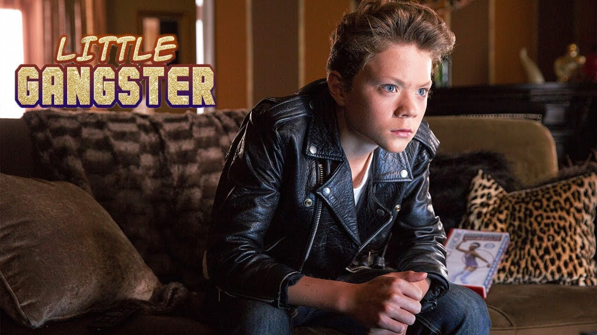
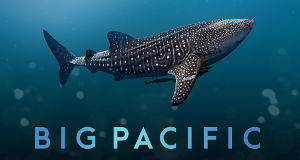

Filme
Der große Bluff
Ein erfolgloser Autor wittert seine Chance aufs große Geld mit den fingierten Memoiren des exzentrischen Milliardärs Howard Hughes. Dramatisierung eines bekannten Fälschungsskandals.Sex Geflüster
Acht sehr unterschiedliche Paare haben eins gemeinsam - sie hatten gerade Sex! Was passiert, wenn der Sex vorbei ist?

Little Gangster
Der unbeliebte Rik behauptet, sein Vater gehöre der Mafia an. Doch dann kommt ein ehemaliger Mitschüler aus seiner alten Stadt an seine neue Schule.Der schwarze Nazi
Sikumoya ist Kongolese und wohnt in Sachsen. Eines Tages wird er von einer Nazikameradschaft brutal zusammengeschlagen. Er fällt ins Koma.No day after
Eine Serie von merkwürdigen Wetterphänomenen rund um Washington DC lässt zwei Brüder, deren Vater ein einst renommierter Klimaexperte war, wieder zueinander finden.Revolver
Jake nimmt Gangsterboss Macha ordentlich aus. Der finanziell äußerst lukrative Abend bringt Jake auf Machas Abschussliste.Fly Boys
Kyle und Jason klettern verbotener Weise in ein Propellerflugzeug. Plötzlich startet das Flugzeug und die beiden müssen feststellen, dass die Maschine auf einen Berg zurast.School
Matt Warner muss als Lehrer im Schatten seines charismatischen und allseits beliebten Vaters Norman Warner an der Fallbrook Middle School unterrichten.Archangel
Professor Kelso, dass ein geheimes Tagebuch von Stalin existieren soll.Als sein Informant ermoderdet wrid erhält der Fall völlig neue Brisanz.Unforgettable
Die Frau des Gerichtsmediziners Dr. Krane wird brutal ermordet und Krane kann vom Täter keine Spur finden. Da er selbst aber zur Tatzeit betrunken war, wird er für den Mörder seiner Frau gehalten.Dokus

Big Pacific
Die Dokumentationsreihe "Big Pacific" zeigt den Pazifischen Ozean und seine faszinierenden Bewohner in nie dagewesener Präzision. In Teil eins geht es um den "gewaltsamen Ozean".Überleben auf dem Mond
50 Jahre nachdem der erste menschliche Fuß den Mond berührte, arbeiten Forscher weltweit mit Hochdruck an der nächsten Mission.Die Waffe der Zerstörung
Der Dokumentarfilm erzählt die Geschichte der zerstörerischsten Waffe, die je erfunden wurde.Starbucks ungefiltert
Die international tätige Starbucks Coffee Company wurde zu einem Symbol der Globalisierung. Es wird genauer untersucht, welche Strategien hinter dem Erfolg stehen.
Kanadas Küstenwölfe
Der Great-Bear-Regenwald an der Westküste Kanadas ist die Heimat der Küstenwölfe. Sie haben die wilde Pazifikküste mit felsigen Riffen und bewaldeten Inseln zu ihrer Heimat gemacht.Der Fall des Florian Homm
Selten sieht man ihn in der Öffentlichkeit ohne Zigarre. Schon äußerlich wirkt Florian Homm wie der Prototyp des Erzkapitalisten.Aufgefahren - Abgezockt
Jeden Tag gibt es Unfälle auf unseren Straßen. Unfallopfer erzählen in "betrifft", was sie erlebt haben. Wir begleiten Ermittler zu manipulierten Unfällen.